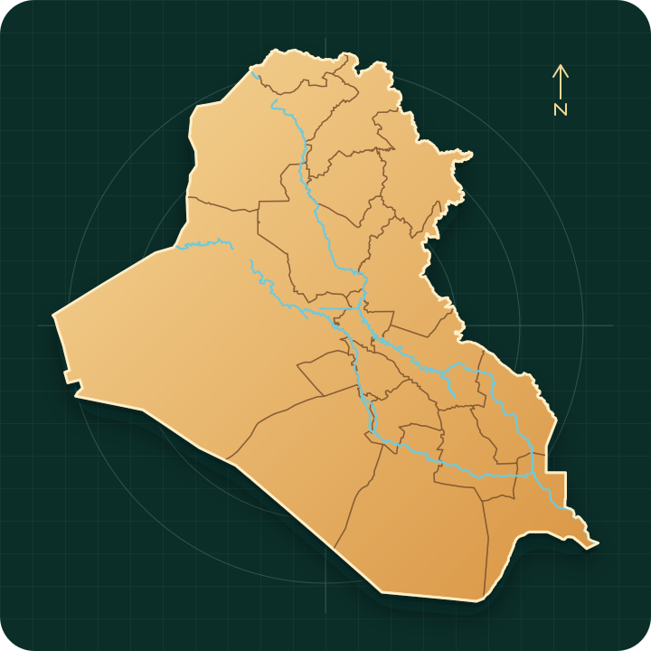

رسم الخرائط
خرائط بحثية وموضوعية دقيقة، أطالس، وإخراج كارتوغرافي متوافق مع معايير النشر.
منصة جغرافية عراقية متخصصة
خرائط احترافية، تحليلات مكانية، مرئيات فضائية وبيانات موثوقة للباحثين وطلاب الجغرافية في العراق.

خبرة مكانية متكاملة
خدمات مصممة للباحثين وطلاب الدراسات العليا، مع فهم للمنهجية العلمية ومتطلبات الإخراج الأكاديمي.
خرائط بحثية وموضوعية دقيقة، أطالس، وإخراج كارتوغرافي متوافق مع معايير النشر.
تحليل العلاقات والأنماط والتوزيعات المكانية وبناء نماذج ملاءمة تدعم نتائج البحث.
رصد زمني للغطاء الأرضي والحرارة والجفاف والمياه، وتحويل التغير إلى مؤشرات قابلة للتفسير.
تحديد المرئيات والمنتجات الأنسب، تجهيزها ومعالجتها وتوثيق المصدر والدقة والفترة الزمنية.
باقات تقديرية مرنة
هذه أسعار إرشادية أولية تساعدك على تقدير حجم العمل. السعر النهائي يحدد بعد مراجعة منطقة الدراسة، نوع البيانات، عدد الخرائط أو التحليلات، وحجم الملفات المطلوبة.
تبدأ من 25,000 د.ع
مناسبة لخريطة واحدة أو إخراج كارتوغرافي واضح لمنطقة دراسة محددة.
تبدأ من 75,000 د.ع
مناسبة للتحليلات الجغرافية أو البيئية التي تحتاج تفسيرًا ونتائج قابلة للاستخدام البحثي.
تبدأ من 150,000 د.ع
مناسبة لمن يحتاج تجهيز بيانات، مرئيات فضائية، مؤشرات، أو سلسلة زمنية كاملة.
نماذج مخرجات
نماذج توضيحية لأنواع المخرجات التي يمكن تجهيزها داخل جيو الرافدين. الهدف منها توضيح شكل الخدمة للطلاب والباحثين قبل إرسال الطلب.
إخراج كارتوغرافي واضح يتضمن العنوان، المقياس، اتجاه الشمال، مفتاح الخريطة، ومصدر البيانات.
مقارنة زمنية للمؤشرات أو الغطاء الأرضي مع خرائط توضح مناطق الزيادة والنقصان واتجاه التغير.
اختيار المرئيات المناسبة، تجهيزها، استخراج مؤشرات مثل NDVI أو NDBI، وتوثيق المصدر والفترة.
خرائط ارتفاع وانحدار واتجاه جريان أو تحليل أحواض مائية بالاعتماد على نماذج الارتفاعات الرقمية.
هذه النماذج توضيحية لأسلوب الإخراج ونوع النتائج. عند توفر أعمال فعلية قابلة للنشر يمكن إضافتها لاحقًا كمعرض مشاريع موثق.
أسئلة شائعة
هذه الأسئلة صُممت لتوضيح طريقة عمل جيو الرافدين للطلاب والباحثين، وتقليل سوء الفهم قبل رفع الملفات أو اختيار الباقة.
انتقل إلى نموذج الطلبنعم. تسجيل الدخول بالبريد يحفظ طلبك داخل حسابك الخاص، ويمنع ظهور بياناتك وملفاتك لأي شخص غيرك أو غير حساب مدير المنصة.
كثير من المصادر العامة مثل Sentinel وLandsat وSRTM مجانية. الرسوم هنا تكون مقابل اختيار البيانات المناسبة، تجهيزها، معالجتها، تحليلها، وتوثيقها للبحث.
نعم. يمكن رفع GeoJSON مباشرة، وللـ Shapefile يفضّل ضغط مكوناته في ملف ZIP واحد حتى تصل الملفات كاملة وبشكل صحيح.
الطلبات البسيطة قد تنجز خلال 1–3 أيام، أما التحليلات أو السلاسل الزمنية أو المشاريع الكبيرة فتحتاج مدة أطول حسب حجم البيانات ومنطقة الدراسة.
لا، هي أسعار تقديرية تبدأ من المبالغ الموضحة. السعر النهائي يعتمد على عدد الخرائط، نوع التحليل، مساحة الدراسة، صيغة التسليم، وموعد الإنجاز المطلوب.
نعم. يمكن طلب استشارة لتحديد المنهجية، اختيار البيانات، بناء خطوات التحليل، أو مراجعة فكرة بحثية قبل بدء التنفيذ الكامل.
الأولوية الحالية للعراق وبياناته المكانية، لكن يمكن استقبال مشاريع خارج العراق إذا كانت البيانات والمنهجية واضحة وقابلة للتنفيذ.
بعد إرسال الطلب يظهر رقم خاص به. يمكنك فتح لوحة المتابعة للاطلاع على الحالة، نسبة الإنجاز، رسالة المدير، والسعر أو موعد التسليم عند إضافتهما.
مكتبة البيانات
دليل أولي لأهم المنتجات المستخدمة في البحوث الجغرافية. نساعدك على اختيار البيانات وتهيئتها لمنطقة الدراسة.
مراقبة الغطاء الأرضي والزراعة والمياه والتوسع الحضري.
تحليل التغيرات طويلة الأمد وحرارة سطح الأرض والمؤشرات الطيفية.
الارتفاع والانحدار واتجاه الجريان وتحليل الأحواض وشبكات التصريف.
متغيرات مناخية لإجراء التحليلات الزمنية ودراسة الاتجاهات البيئية.
هذه بطاقة تعريفية بالمصادر، ولا تعني بيع البيانات العامة ذاتها. رسوم الخدمة تكون مقابل الاختيار والمعالجة والتجهيز والتحليل.
رحلة مشروعك
حدد منطقة الدراسة والخدمة والنتيجة المطلوبة.
نراجع البيانات والمنهج ونوضح النطاق والتكلفة.
تنفيذ التحليل ومراجعة الدقة وجودة الإخراج.
تستلم الملفات مع شرح موجز وإمكانية المراجعة.
المؤسس والمشرف العلمي
خبرة أكاديمية بروح عملية
تأسست جيو الرافدين بإشراف مصطفى صالح حسين، طالب دكتوراه في الجغرافية ومتخصص في رسم الخرائط وتحليلها والاستشعار عن بُعد وتحليلاته. تهدف المنصة إلى مساعدة طلاب الجغرافية والباحثين على تحويل البيانات المكانية والمرئيات الفضائية إلى خرائط ونتائج مفهومة قابلة للاستخدام في البحث العلمي.
«هدفنا أن تكون الخريطة أداة للفهم، وليست مجرد صورة تضاف إلى البحث.»
خصوصية وثقة قبل التنفيذ
يتعامل جيو الرافدين مع الطلبات والملفات بوصفها بيانات بحثية خاصة. الهدف هو تنفيذ الخدمة المتفق عليها فقط، مع تقليل جمع البيانات قدر الإمكان وربط كل طلب بحساب صاحبه.
لا تظهر الطلبات والملفات إلا لصاحب الحساب أو مدير المنصة المخوّل لأغراض تقديم الخدمة والدعم.
تُستخدم البيانات لفهم الطلب، تنفيذ التحليل، التواصل، وحماية المنصة، ولا تُباع بيانات المستخدمين.
تُحذف الطلبات وملفاتها بعد 90 يوماً من وضع الطلب في حالة مكتمل، ما لم يوجد سبب قانوني موثق للاحتفاظ المحدود.
البيانات العامة مثل Sentinel وLandsat تبقى خاضعة لشروط مزوديها، والرسوم تكون مقابل التجهيز والتحليل لا بيع المصدر العام.
لا ترفع كلمات مرور أو مفاتيح وصول أو بيانات شخصية لا تملك حق مشاركتها. كما لا يُنصح باستخدام المخرجات وحدها في قرارات سلامة أو طوارئ أو قرارات قانونية عالية المخاطر دون تحقق متخصص مستقل.
لنبدأ من سؤال البحث
املأ البيانات الأساسية وسنراجع الطلب لتحديد المنهج والبيانات والمدة المناسبة.
تواصل منظم وواضح
صُممت جيو الرافدين حتى تكون قنوات التواصل واضحة من البداية: الطلب يُرسل من النموذج، المتابعة تتم من لوحة طلباتي، والاستفسارات العامة تصل عبر البريد الرسمي.
القناة الأساسية بعد إرسال الطلب؛ من خلالها تظهر الحالة، نسبة الإنجاز، رسالة المتابعة، السعر المقترح، وموعد التسليم.
فتح لوحة المتابعة ←للاستفسارات العامة، التعاون البحثي، أو الأسئلة التي لا ترتبط بطلب محفوظ داخل المنصة.
mmssuu76@gmail.com ←لأي خدمة تنفيذية: خرائط، تحليلات، بيانات استشعار، أو استشارة بحثية. النموذج يحفظ التفاصيل والملفات بأمان.
إرسال طلب جديد ←